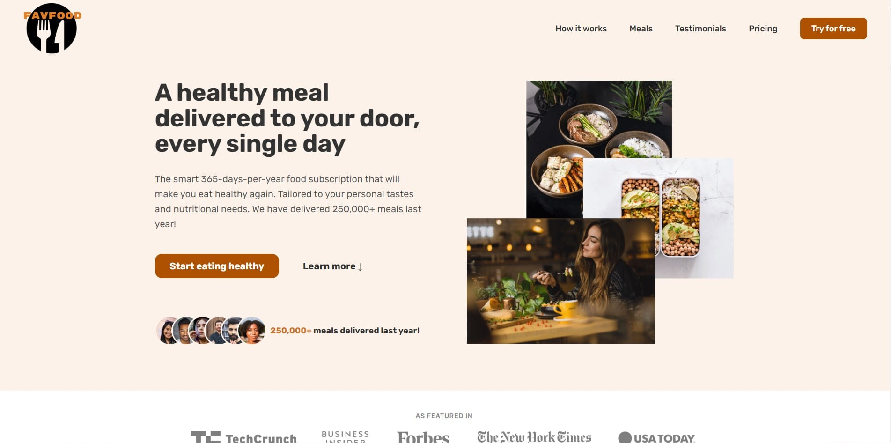
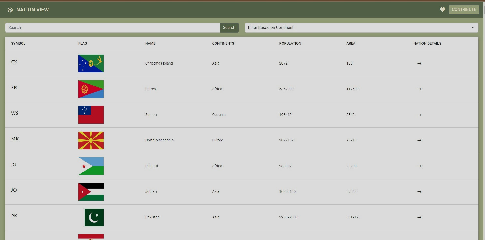

Implemented major design patterns in HTMl,CSS and Javascript.
This is a static website that is majorly focussed on the design patterns
and User Experience

Created a Full Dynamic Webapplication that uses API to fetch each
country's details
Worked on creating responsive web design and pleasant user Experience
